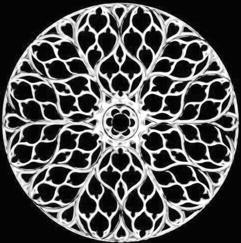

"Een object is symmetrisch als men er bepaalde veranderingen aan kan doorvoeren, waarbij het eindresultaat weer hetzelfde object is waarmee men begon."
Deze zeer treffende definitie van symmetrie hebben we te danken aan de beroemde wiskundige Hermann Weyl (1885-1955). Op deze wijze bezit bijvoorbeeld de onderstaande afbeelding van een gotisch raamrozet een rotationele symmetrie. Een rotatie van de afbeelding met 60° zal terug de originele afbeelding weergeven.
Het programma aan de rechterkant laat je toe om verschillende figuren te genereren die een rotationele symmetrie bezitten. Je kan de plaats van het fruit veranderen door het simpelweg te verslepen.
|
 |
Gotisch raamrozet in Paris Sainte-Chapelle